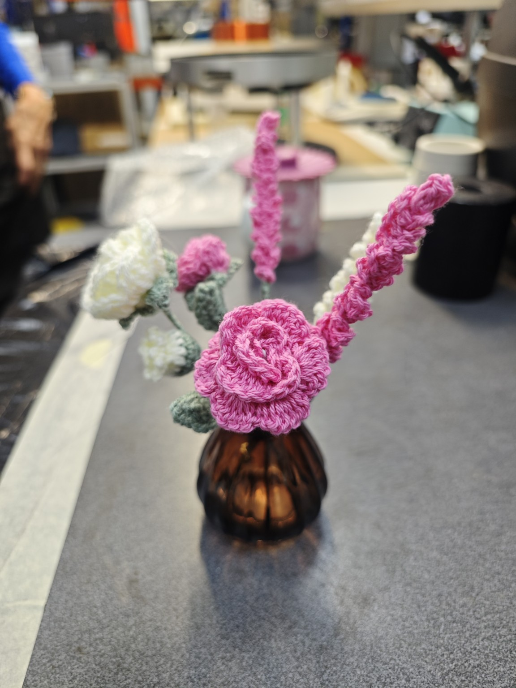
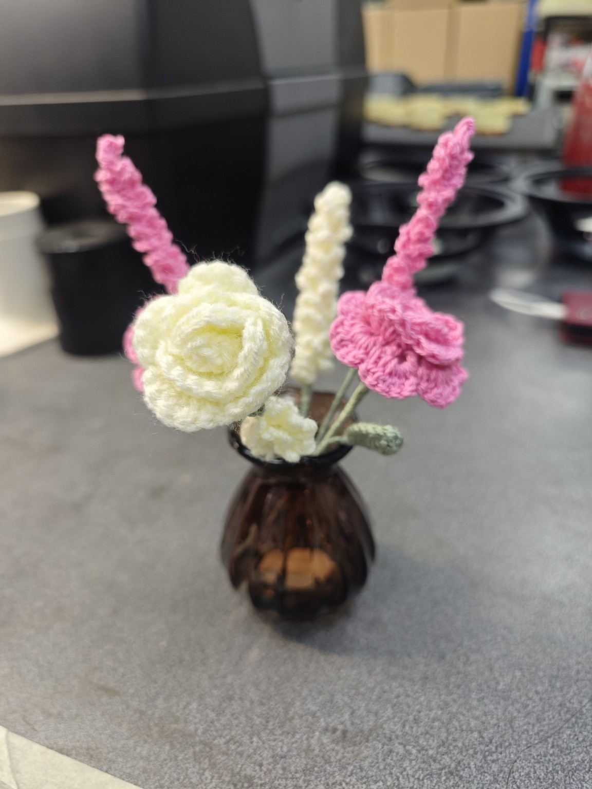
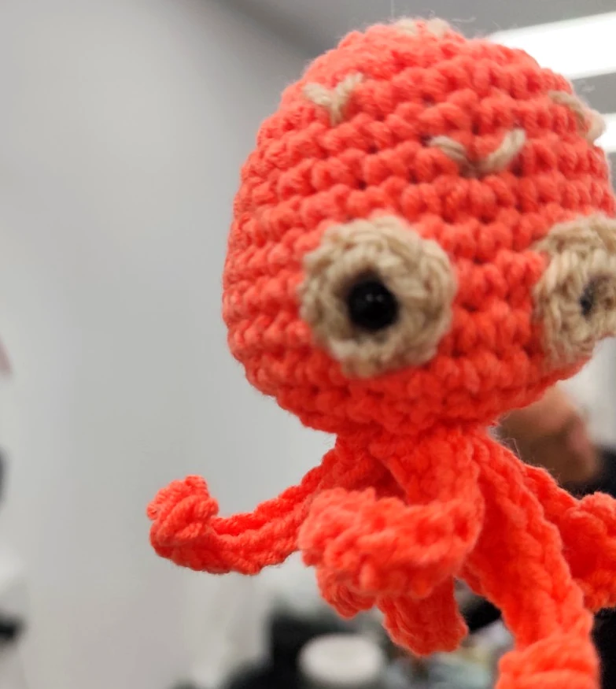
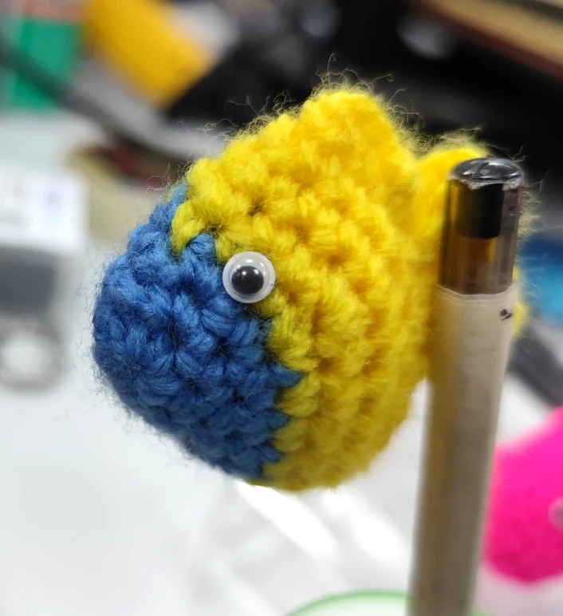
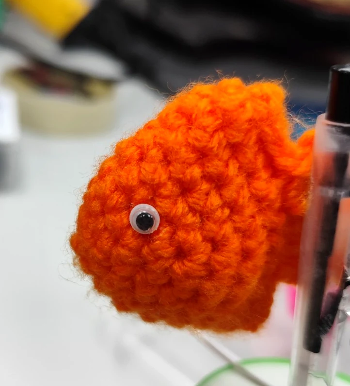
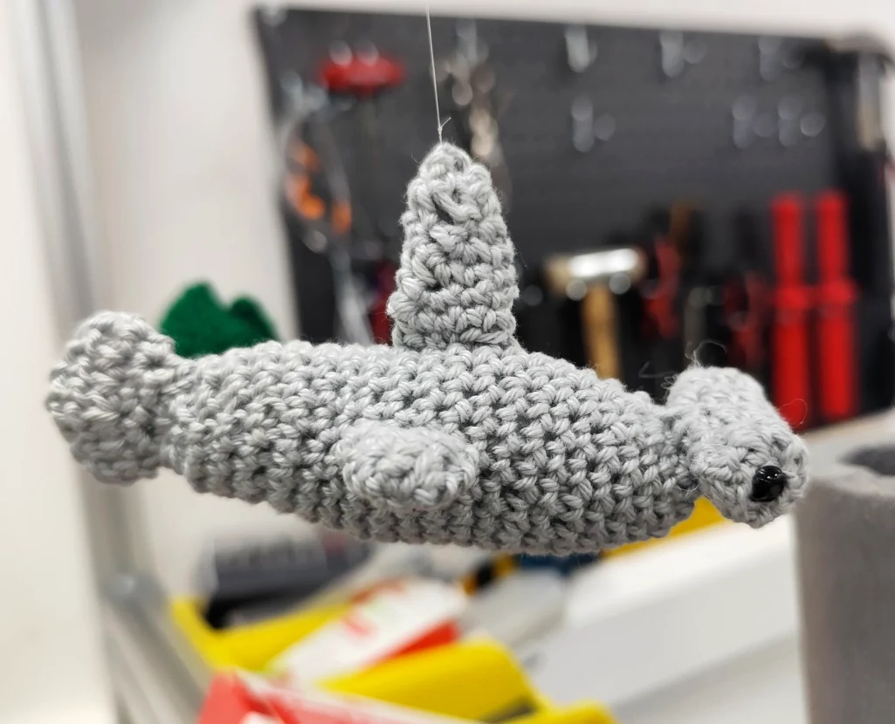
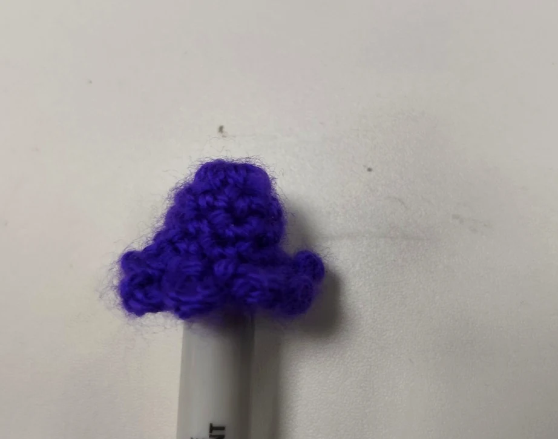

Yarn. A hook. A little imagination.The Wooly Wonders collection / 2026
A little world,
made of yarn.
Flowers that stay. Fish with personality. Small things, made slowly, to make you look a little closer.
Pull on the thread ↘
+01 / Pink & creamMade to stay.EVERY PETAL
EVERY STITCH
BY HAND
A flower. A fish. A small smile.✳One stitch at a time.✳A world worth slowing down for.
01 / The flowers
A very different
kind of bouquet.
Petals in pink and cream. Soft green leaves. An amber vase. A little arrangement with no last day of spring.
+01a / The pink rosePink & cream bouquet
+01b / Turn it around
Same flowers.
Another little story.
A cream rose takes the lead on the other side. Look closer at the curled petals and the tiny loops that give each leaf its shape.
Rose / cream / sage / amber
02 / The little ones
Meet the
soft inhabitants.
Some swim. Some sit on a pen. All began as a length of yarn. Choose a piece and take a closer look.
8 views in the collection
 +
+NO. 01Ocean friend
Gray Shark
Crocheted by hand

+NO. 02Ocean friend
Orange Octopus
Crocheted by hand

+NO. 03Tiny piece
Blue & Yellow Fish
Crocheted by hand

+NO. 04Tiny piece
Orange Fish
Crocheted by hand
 +
+NO. 05Tiny piece
Pink Fish
Crocheted by hand
 +
+NO. 06Tiny piece
Green Fish
Crocheted by hand

+NO. 07Another angle
Shark, in Profile
Crocheted by hand

+NO. 08Tiny piece
Purple Mini Topper
Crocheted by hand
03 / The stitches
You can see
the making.
The loops, the curled edges, the slight differences from one petal to the next. Look closely and the whole piece tells you how it came together.
- THE TEXTURE
- Loops of yarn build up into fins, leaves and petals.
- THE CHARACTER
- A tiny eye. A curved fin. The turn of a rose.
- THE HAND
- Small variations belong to each handmade piece.
{kind=link}
{kind=link}
{kind=link}
{kind=link}
{kind=link}
{kind=link}
{kind=link}
{kind=link}